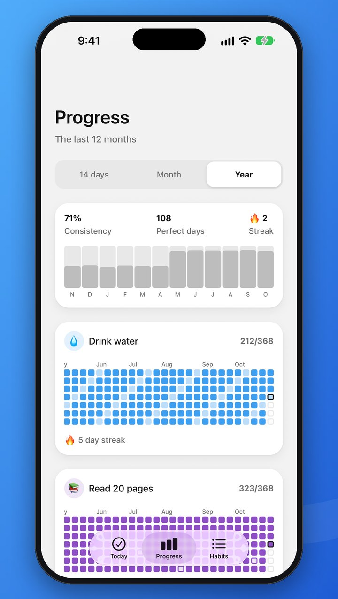
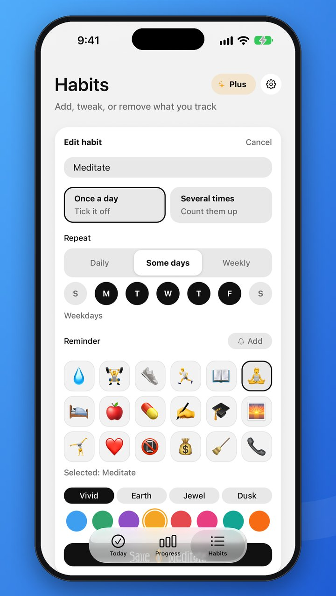
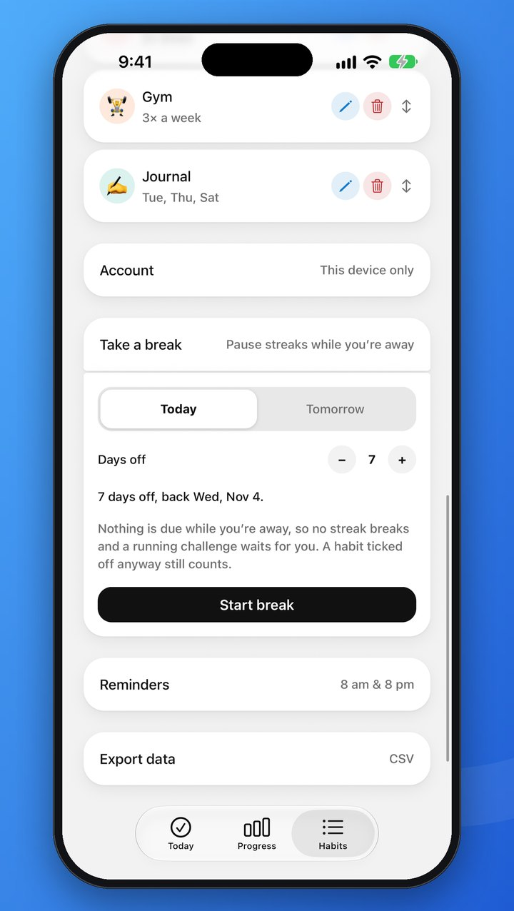
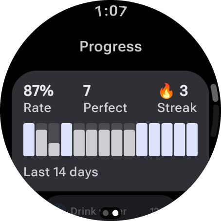
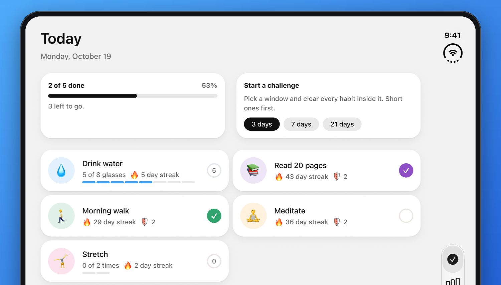

Your whole history
Page back through every month, and see a whole year for each habit as a heatmap. The free app keeps your last 14 days, this month and the one before.

Daily Ring makes good habits easy to keep. Tap a habit to check it off, pick the days that suit you, and watch your streaks grow. Free, and ready in seconds.
See how it worksiPhone · iPhone Duo · iPad · Apple Watch · Android · Wear OS
No account needed. A short welcome shows you schedules and streak shields, sets up reminders and your first challenge, and three example habits are already there.
Keep the three examples or add your own: once a day or a count like 8 glasses of water, every day or only on the days you choose.
One tap in the app, on your Home Screen widget or on your watch, with a cheerful sound to say well done.
Streaks, a month calendar and 3-, 7- and 21-day challenges show how far you have come, and keep you coming back.
Everything you need to build a habit, and nothing that gets in the way.

A gentle tap, a cheerful sound, and confetti when you close out the day. Small rewards that make you want to come back tomorrow.
Not every habit is a daily one. Pick the days that suit each habit, or just how many times a week, and Daily Ring only counts the days you asked for. Miss one anyway? A streak shield has your back.

See your last 14 days at a glance, and a month calendar for every habit, with a 🛡️ wherever a shield saved the day. Progress you can actually see is progress you keep.

The interactive widget puts today's habits right where you look most. Tap a row to log it without even opening the app.

Some habits are done once, others add up. Track 8 glasses of water, 20 pages or 3 sets of reps, or simply mark it done.

Morning and evening reminders that know what's left, so a nudge always means something. Give any habit a time of its own, too. Everything stays on your device.

Daily Ring follows your device into Light or Dark Mode. To pin one, or to pick English or French, tap the gear on the Habits tab. Every choice applies the moment you tap it.
Daily Ring is free to use, with no ads. Plus is the optional upgrade for when you want room for every habit, your whole story, and a few ways to make it truly yours.
Page back through every month, and see a whole year for each habit as a heatmap. The free app keeps your last 14 days, this month and the one before.

The free app holds up to 5. Plus takes the limit away, so you can track everything you care about.
Plan a break of up to 30 days. Nothing is due while you’re away, so no streak breaks and a running challenge waits for you.

Four more app icons, three sound packs and three more colour palettes for your habits.
When 21 days feels easy, go the distance with 30, 66 or 100.
Medium and large Home Screen widgets and a Lock Screen one on iPhone, and the two-column widget on Android.
The Apple Watch and Wear OS apps. Glance at today, tap a habit to log it, and swipe across to see your last two weeks. Your phone can stay in your pocket.


Free stays free. Logging, schedules, streaks and shields, reminders, the small widget, backup, sync and export never need Plus. If Plus ends, you keep every habit, all your history and the colours you picked.
Get it in the app: tap Plus at the top of the Habits tab. See the terms of sale.
Two columns on iPad and on the open iPhone Duo, a widget on your Home Screen, a tap on your wrist with Plus, and Light and Dark Mode that are easy on the eyes, day or night.


A few of the moments Daily Ring is built for.
Count your water as the day goes, and watch the bar fill up glass by glass.
Back from your morning walk? Tick it off on your watch with Plus, your phone still in your pocket.
Tap a row on the Home Screen widget and it’s logged. That’s it.
The evening reminder tells you what’s still to do, so it always means something.
Check off the last habit and the confetti falls. A small celebration you earned.
Every 7 days done banks a shield. Miss a day and it steps in, so one bad Tuesday doesn’t undo a month.
No catch. Just a habit tracker that respects your time and your data.
No banners, ever. Logging, schedules, streaks, reminders, sync and export are free for everyone.
No sign-up screen. Three example habits are ready to keep or swap, with a clean slate and no made-up history.
Everything works without a connection. Changes back up when you're next online.
Your habits survive a lost phone. Add an email to use them on another device.
Export every check-off as a spreadsheet, or delete your account and every habit with it, right from the app. How.
Free, with no ads and no sign-up. On iPhone, iPad and Android, and on Apple Watch and Wear OS with Plus.
Yes. Logging, schedules, streaks and shields, reminders, the small widget, backup and sync, and CSV export are free for everyone, with no ads and no sign-up. Daily Ring Plus is an optional upgrade on top.
Unlimited habits (the free app keeps up to 5), your whole history (every month and the year at a glance), 30-, 66- and 100-day challenges, Vacation mode to pause your streaks while you are away, bigger widgets (and a Lock Screen widget on iPhone), sound packs, colour palettes for your habits, four more app icons on iPhone and iPad, and the Apple Watch and Wear OS apps. See them all. You get it in the app, through the App Store or Google Play. If Plus ends, you keep every habit, all your history and your colours; see the terms of sale.
On the Habits tab, open Take a break, choose Today or Tomorrow and how many days off, up to 30, then tap Start break. Nothing is due while you are away, so no streak breaks and a running challenge waits for you; a habit you tick off anyway still counts. You can end a break early at any time. Starting one needs Daily Ring Plus; ending one never does.
Yes. Daily Ring follows your device’s language: French if your phone is set to French, English otherwise. To choose a language in the app itself, tap the gear on the Habits tab and pick one under Language. The widget and the watch apps keep following your device’s language; to change it for Daily Ring alone, go to Settings → Daily Ring → Language on iPhone, or to App languages on Android 13 and later.
Yes. Daily Ring follows your device’s appearance by default. To set it for Daily Ring alone, tap the gear on the Habits tab and choose Light, Dark or Automatic under Appearance.
Yes. Folded, it looks just like it does on any iPhone. Open it, and Today, Progress and Habits spread into two columns, the same way they do on iPad.
No. The app backs up your habits to an anonymous account automatically. To use the same habits on another device, or to keep them after changing phones, add an email in Habits → Account.
On your old phone, add an email in Habits → Account. On the new phone, open the same screen and sign in with that email and password.
Go to Habits → Reminders, turn them on and pick the times. For a reminder about one habit, tap Edit on it and add a time under Reminder; it only rings on days the habit is due, and not once it’s done. Reminders stay on your device, so allow notifications for Daily Ring in your phone’s settings.
On the Habits tab, touch and hold a habit, then drag it. The new order appears on every screen. Tap Edit on a habit to change its name, icon, colour, daily target or schedule, or to switch it between Once a day and Several times. Tapped one by mistake on Today? Hold it to undo.
Yes. When you add or edit a habit, choose under Repeat: Daily, Some days to pick the weekdays, or Weekly to do it a number of days a week, whichever days you like. A day a habit isn’t due never counts against it, and a weekly habit waits under Optional today until the days left in the week leave no room to skip.
Every 7 days you complete a habit earns it a 🛡️ shield, and it can hold up to 2. Miss a day the habit was due and a shield covers it, so the streak carries on. A habit’s shields show beside its streak on Today.
Yes. Go to Habits → Export data. Daily Ring makes a CSV file with one row for each habit on each day you logged it, then opens the share sheet so you can save it to Files or Drive, email it, or open it in Excel, Numbers or Google Sheets. The file is made on your device and goes only where you send it.
Yes, with Daily Ring Plus. It comes with the iPhone app: once Daily Ring is on your iPhone, install it on your watch from the App Store on the watch, or let it install automatically if Automatic App Install is on in the Watch app. It needs watchOS 10 or later, and anything you log on your wrist reaches your iPhone the next time they are connected.
Yes, with Daily Ring Plus. It comes with the Android app: once Daily Ring is on your phone, install it on your watch from the Play Store on the watch. It needs Wear OS 3 or later, and anything you log on your wrist reaches your phone the next time they are connected.
Yes. Everything works offline, and changes are backed up when you are next online.
In the app, go to Habits → Account → Delete account. If you no longer have the app, see Delete your account.
Questions, bugs or ideas — we read every message and usually reply within a couple of days.